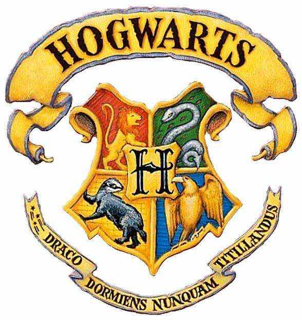

霍格沃茨四大分院
霍格沃茨
霍格沃茨魔法学院（Hogwarts School of Witchcraft and Wizardry），来源于J.K.罗琳所著的魔幻小说《哈利·波特》，并在《神奇动物在哪里》系列电影中出现。
学校位于英国苏格兰哥特式风格的霍格沃茨城堡，它的确切位置不能确定，因为这里不可标绘。相似地，大多数魔法学校的地点都是保密的，这样能够保证各自的秘密不被外人知晓，同时保护学生和学校本身不会受到外来的侵害。
有魔法能力的孩子在出生时就被登记下来，他们会在11岁时收到猫头鹰寄来的录取通知书。
霍格沃茨学院共分为四个学院，分别是格兰芬多（Gryffindor）、赫奇帕奇（Hufflepuff）、拉文克劳（Ravenclaw）和斯莱特林（Slytherin），四个学院皆有其代表颜色与动物。新生入学后，第一件事情就是戴上分院帽
（Sorting Hat）进行分院，分院帽会根据你的性格和品质来判断你该属于哪一个学院。

学校概况
霍格沃茨是一所全日制寄宿学校，位于英国苏格兰的某个黑湖旁的城堡中。城堡外有一片宽阔的草地，还有花坛和菜园。
城堡边有一个湖（称为黑湖）、一片茂密的森林（称为禁林）、几座温室和其他一些附属建筑，这里也有猫头鹰棚屋，
学生和学校拥有的猫头鹰全部居住在这里。除此之外，还有一座标准的魁地奇球场。
霍格沃茨城堡最高的三座塔楼分别是天文塔、拉文克劳塔和格兰芬多塔。城堡共有142处台阶，这些台阶有的又宽又大，
有的又窄又小、摇摇晃晃；有的每逢星期五就通到不同的地方；有些上到半截，一个台阶会突然消失，
因此，要记住在什么地方应当跳过去，另外，这里还有许多门，并且墙壁上挂有很多画像和相片。门上画像中的人物作为看守者，
如果，你不客客气气地请它们打开，或者确切地捅对地方，它们是不会为你开门的；还有些门根本不是真正的门，
只是一堵堵貌似门的坚固的墙壁。想要记住哪些东西在什么地方很不容易，城堡中的一切都在“不停地移动”，包括所有的楼梯台阶。
前校长阿不思·邓布利多曾说就连自己也不知道霍格沃茨城堡的所有秘密，因为这座城堡历史悠久。
所有巫师在霍格沃茨中都无法幻影移形，他们只可以使用飞天扫帚或飞路粉，或者搭乘骑士公共汽车或幻影移形到学校附近的地点，
再步行到达学校。霍格沃茨的学生开学时，需要搭乘霍格沃茨特快列车到达霍格莫德车站，新生通过仿照千年前四大创办者划船的方式，
渡湖到达霍格沃茨，老生则乘坐夜骐拉的马车到达学校。霍格沃茨附近被施了麻瓜驱逐咒，让麻瓜无法接近这里。他们看不到学校的样子，
只能看见一堆破败的废墟，还有入口处写着“危险，不得进入，不安全”的牌子。麻瓜的电子仪器和设备都不能在霍格沃茨使用，
因为霍格沃茨周围充满强烈的魔法磁场，会对电子设备产生强烈的干扰，但是，无线电设备除外，
因为魔法世界使用的无线电设备并不是通过电力启动，而是靠魔法。
学生在校有优异表现或贡献，除了能为自己的学院赢得分数外，也有可能获得“特殊贡献奖”（Special Awards for Services）。
汤姆·里德尔、哈利·波特、罗恩·韦斯莱都曾获得此奖项。相反，若触犯校规，不但会被扣分，还有可能被关禁闭；关禁闭有很多种形式，
例如：不用魔法进行清洁工作、或协助猎场看守鲁伯·海格到禁林巡逻等。
校歌与分院帽之歌
★在《哈利波特与阿兹卡班的囚徒》电影中，在礼堂，菲利乌斯·弗立维教授指挥的并不是校歌，而是霍格沃茨合唱团为了开学晚宴特地准备的一首名叫《Double Trouble》的歌。
校歌
（可用任何曲调伴唱）
霍格沃茨，霍格沃茨，霍格沃茨，霍格沃茨，
请教给我们知识，
不论我们是谢顶的老人，
还是跌伤膝盖的孩子
我们的头脑可以接纳
一些有趣的事物。
因为我们头脑空空，充满空气，
死苍蝇和鸡毛蒜皮，
教给我们一些有价值的知识，
把被我们遗忘的，还给我们，
你们只要尽全力，其他的交给我们自己，
我们将努力学习，直到我们化为粪土。
分院帽之歌
分院帽之歌每年都会更改，所以并不一样，在小说中一共出现3个版本。
一
你们也许觉得我不算漂亮，
但千万不要以貌取人，
如果你们能找到比我更聪明的帽子，
我可以把自己吃掉。
你们可以让你们的圆顶礼帽乌黑油亮，
让你们的高顶丝帽光滑挺括，
我可是霍格沃茨测试用的礼帽，
自然比你们的帽子高超出众。
你们头脑里隐藏的任何念头，
都躲不过魔帽的金睛火眼，
戴上它试一下吧，我会告诉你们，
你们应该分到哪一所学院。
你也许属于格兰芬多，
那里有埋藏在心底的勇敢，
他们的胆识、气魄和豪爽，
使格兰芬多出类拔萃；
你也许属于赫奇帕奇，
那里的人正直忠诚，
赫奇帕奇的学子们坚忍诚实，
不畏惧艰辛的劳动；
如果你头脑精明，
或许会进智慧的老拉文克劳，
那些睿智博学的人，
总会在那里遇见他们的同道；
也许你会进斯莱特林，
也许你在这里交上真诚的朋友，
但那些狡诈阴险之辈却会不惜一切手段，
去达到他们的目的。
来戴上我吧！不必害怕！
千万不要惊慌失措！
在我的手里（尽管我连一只手也没有）
你绝对安全
因为我是一顶会思想的魔帽！
二
很久以前我还是顶新帽，
那时霍袼沃茨还没有建好，
高贵学堂的四位创建者，
以为他们永远不会分道扬镳。
同一个目标将他们联在一起，
彼此的愿望是那么相同一致：
要建成世上最好的魔法学校，
让他们的学识相传、延续。
“我们将共同建校，共同教学！”
四位好友的主意十分坚决，
然而他们做梦也没有想到，
有朝一日他们会彼此分裂。
这个世上还有什么朋友，
能比斯莱特林和格兰芬多更好？
除非你算上另一对挚友，
赫奇帕奇和拉文克劳？
这样的好事怎么会搞糟？
这样的友情怎么会一笔勾销？
唉，我亲眼目睹了这个悲哀的故事，
所以能在这里向大家细述。
斯莱特林说：“我们所教的学生，
他们的血统必须最最纯正。”
拉文克劳说：“我们所教的学生，
他们的智力必须高人一等。”
格兰芬多说：“我们所教的学生，
必须英勇无畏，奋不顾身。”
赫奇帕奇说：“我要教许多人，
并且对待他们一视同仁。”
这些分歧第一次露出端倪，
就引起了一场小小的争吵。
四位创建者每人拥有一个学院，
只招收他们各自想要的少年。
斯莱特林收的巫师如他本人，
血统纯正、诡计多端。
只有那些头脑最敏锐的后辈，
才能聆听拉文克劳的教诲。
若有谁大胆无畏、喜爱冒险，
便被勇敢的格兰芬多收进学院。
其余的人都被好心的赫奇帕奇接收，
她把自己全部的本领向他们传授。
四个学院和它们的创建人，
就这样保持着牢固而真挚的友情。
在那许多愉快的岁月里，
霍格沃茨的教学愉快而和谐。
可是后来慢慢地出现了分裂，
并因我们的缺点和恐惧而愈演愈烈。
四个学院就象四根石柱，
曾将我们的学校牢牢撑住。
我们却互相反目，纠纷不断，
各个都想把大权独搅。
有那么一段时光，
学校眼看着就要夭亡。
无数的吵闹，无数的争斗，
昔日的好朋友反目成仇。
后来终于在某一天清晨，
年迈的斯莱特林突然出走。
尽管那时纷争已经平息，
他还是灰心地离我们而去。
四个创建者只剩下三个，
从此四个学院的情形，
再不像过去设想的那样
和睦相处，团结一心。
你们都知道了事情的渊源：
我把你们分进四个学院，
因为我的职责不容改变。
但是我要多说几句，
请你们把我的新歌仔细听取：
尽管我注定要使你们分裂，
但我担心这样做并不正确。
尽管我必须履行我的职责，
把每年的新生分成四份，
但我担心这样的分类，
会导致我所惧怕的崩溃。
哦，知道危险，读懂征兆，
历史的教训给我们以警告，
我们的霍格沃茨面临着危险，
校外的仇敌正虎视眈眈。
我们的内部必须紧密团结，
不然一切就会从内部瓦解。
我已对你们直言相告，
我已为你们拉响警报。
让我们马上开始分院吧。
校徽与校训
霍格沃茨校训是Draco dormiens nunquam titillandus，这是英语，意思是“永远不要逗弄一条沉睡的龙”（眠龙勿扰），
这校训是不是学校创办人的亲身经历而定下的，已经不得而知。
校徽是一个非常典型的饰章，中间形如盾牌部分称为纹章，由象征四个学院的动物狮（格兰芬多）、
鹰（拉文克劳）、獾（赫奇帕奇）和蛇（斯莱特林）组成，环绕着“霍格沃茨”（Hogwarts）的首字母"H"。
环绕着盾牌的是装饰部分，主要是写着校名和校训的两条绶带。两个部分统称饰章。
在霍格沃茨特快列车和霍格沃茨校服上都有霍格沃茨的饰章。
学校简史
早期历史
霍格沃茨学院是公元990年左右创办的。创办者是当时最伟大的四位巫师：戈德里克·格兰芬多、萨拉查·斯莱特林、罗伊纳·拉文克劳、赫尔加·赫奇帕奇。学校的四个学院就是以他们的名字命名的。他们建立学校，远离麻瓜们窥视的目光，因为，在当时那个年代，麻瓜们畏惧魔法，很多男女巫师都遭到迫害。他们每个人都有自己的个性，并在挑选学生时展现出来。可是，慢慢地，他们之间就有了分歧。萨拉查·斯莱特林就血统成分的问题，和另外三人发生了分歧。萨拉查·斯莱特林只希望招收纯血统的学生。不久后，萨拉查·斯莱特林和戈德里克·格兰芬多因为这个问题，发生了一次激烈的争吵，然后萨拉查·斯莱特林便离开了学校。离校前，萨拉查·斯莱特林在城堡里建了一个密室，其他创办者对此一无所知。萨拉查·斯莱特林封闭了密室，直到他真正的继承人来到学校，只有那个继承人能够开启密室，把里面的恐怖东西放出来，让它“净化”学校，清除所有不配学习魔法的人（即麻瓜出身的巫师）。
中期历史
在学校创办了大约三百年之后，在欧洲三所最有名望的魔法学校之间，开始了三强争霸赛：霍格沃茨魔法学校、布斯巴顿魔法学校和德姆斯特朗魔法学校。这比赛被认为是不同国籍的巫师相互交流切磋的最佳方式。比赛延续了六个世纪，后来，因为死亡人数太高，比赛被中断了。
近期历史
1942年，密室被汤姆·里德尔第一次打开，他是萨拉查·斯莱特林的继承人，也是未来的伏地魔。密室打开后，一名叫桃金娘的女孩被密室中的怪物杀害，魔法部威胁关闭学校。汤姆·里德尔害怕他从此返回麻瓜孤儿院，他没有想到要学校关闭，因此他嫁祸于三年级学生鲁伯·海格和鲁伯·海格养的八眼巨蜘蛛阿拉戈克，导致鲁伯·海格被开除，汤姆·里德尔也因此获得学校的特殊贡献奖。
奇洛和哈利波特
1991年，由于藏在古灵阁713号金库的魔法石安全受到威胁，校长阿不思·邓布利多将魔法石转移到了霍格沃茨四楼靠右侧走廊下方的密室里，并与其他老师一起设置了防御机关。但时任黑魔法防御术教师奎里纳斯·奇洛（已成为黑巫师，并被伏地魔附身）还是突破了其他老师设置的所有防御机关，而受阻于阿不思·邓布利多亲自布下的厄里斯魔镜前。一年级学生哈利·波特与两个朋友罗恩·韦斯莱、赫敏·格兰杰一起合作，穿越众多机关。哈利·波特与奎里纳斯·奇洛搏斗并守住魔法石，但自己也险些丧命。后来阿不思·邓布利多赶到，救下哈利·波特。魔法石则按照阿不思·邓布利多和尼可·勒梅的意愿被销毁。
墙上的血字
1992年，在汤姆·里德尔的日记的影响之下，金妮·韦斯莱被汤姆·里德尔的记忆迷惑，密室由金妮·韦斯莱第二次打开。密室中的怪物袭击并石化了四名麻瓜出身的学生、格兰芬多幽灵“差点没头的尼克”和哑炮管理员阿格斯·费尔奇的猫洛丽丝夫人。原来是卢修斯·马尔福偷偷将汤姆·里德尔的日记放在她的变形术课本里，借此诬陷她的父亲亚瑟·韦斯莱，使亚瑟·韦斯莱出台的麻瓜保护法被否决。但是，哈利·波特和罗恩·韦斯莱发现了真相。哈利·波特摧毁了日记，杀死了密室中的蛇怪，还救出了被汤姆·里德尔的记忆控制进入密室的金妮·韦斯莱。而在校医波比·庞弗雷夫人和草药学教师波莫娜·斯普劳特教授的帮助下，所有被蛇怪石化的人、幽灵和动物都被成功救活。
潜入的布莱克
1993年，由于魔法部认为小天狼星·布莱克逃出巫师监狱阿兹卡班是为了潜入霍格沃茨杀死哈利·波特，所以派遣大批摄魂怪进驻霍格沃茨，而霍格沃茨本身也加强了各种安全措施。但小天狼星·布莱克仍然潜入（因为小天狼星·布莱克是阿尼玛格斯），并躲藏在霍格莫德的尖叫棚屋。之后哈利·波特、罗恩·韦斯莱、赫敏·格兰杰三人同当时的黑魔法防御术教授莱姆斯·卢平（他其实是狼人）发现小天狼星·布莱克是无辜的，真正出卖了哈利·波特父母的泄密者是小矮星彼得（他也是个阿尼玛格斯），哈利·波特等人抓住了变成老鼠斑斑的小矮星彼得，但当时恰好是月圆之夜，莱姆斯·卢平变身成为狼人，小矮星彼得乘机逃走。后来魔药学教授西弗勒斯·斯内普苏醒后，将哈利·波特等三人和小天狼星·布莱克运回城堡，准备将小天狼星·布莱克交给摄魂怪进行“亲吻”。但是校长阿不思·邓布利多教授相信了哈利·波特和赫敏·格兰杰的说辞，让两人通过时间转换器回到过去，救下将被处决的鹰头马身有翼兽巴克比克。随后哈利·波特用呼神护卫驱逐了大批摄魂怪，救了原来的自己，又和赫敏·格兰杰一起骑上巴克比克，救出小天狼星·布莱克，让他骑着巴克比克逃走了。
圣诞舞会
1994年，三强争霸赛复办，其中加上了额外几项安全措施，最重要的一项是年龄未满17周岁的学生一律不得参赛。但是，小巴蒂·克劳奇利用复方汤剂伪装成时任黑魔法防御术的教授阿拉斯托·穆迪，将真阿拉斯托·穆迪塞进了他自己的行李箱里。小巴蒂·克劳奇用混淆咒迷惑了火焰杯，将哈利·波特的名字投入火焰杯中，并使他被火焰杯选上。结果，哈利·波特成为了第四个参赛者，同时面对布斯巴顿魔法学校学生、德姆斯特朗魔法学校学生及许多霍格沃茨学生的憎恶。小巴蒂·克劳奇利用种种手段帮助哈利·波特赢得比赛， 最后将三强杯变成门钥匙，使哈利·波特和霍格沃茨另外一位勇士塞德里克·迪戈里一触摸奖杯就被送到伏地魔手上。塞德里克·迪戈里惨遭小矮星彼得的杀害，而伏地魔成功利用哈利·波特的血液制成特殊魔药重新恢复肉身。经过一番恶斗后，哈利·波特把塞德里克·迪戈里的遗体带回霍格沃茨学校，小巴蒂·克劳奇见状，意图杀害哈利·波特，结果被阿不思·邓布利多击昏。哈利·波特的陈述和小巴蒂·克劳奇的供词使阿不思·邓布利多知晓了伏地魔成功恢复肉身的消息，但魔法部长康奈利·福吉却拒绝相信，导致阿不思·邓布利多和康奈利·福吉决裂。
1995年，魔法部开始诋毁、抹黑阿不思·邓布利多。多洛雷斯·乌姆里奇，新任黑魔法防御术教师，是这个计划的中心。按照魔法部的指令，多洛雷斯·乌姆里奇在黑魔法防御术教学中，拒绝向学生教授防御符咒的内容，同时蓄意惩罚哈利·波特。在赫敏·格兰杰的谋划下，哈利·波特成立了邓布利多军（简称D.A.），带领一些学生学习被魔法部禁止学生学习的防御符咒。在一连串的教育令之下，多洛雷斯·乌姆里奇出任霍格沃茨高级调查官，慢慢地接管了霍格沃茨学校的各项事务。由于D.A.内部成员的背叛，多洛雷斯·乌姆里奇抓住了D.A.的领头人哈利·波特，阿不思·邓布利多替哈利·波特揽下罪责并逃离霍格沃茨。魔法部通缉阿不思·邓布利多，并由多洛雷斯·乌姆里奇替换阿不思·邓布利多成为校长（但未被学校承认，导致多洛雷斯·乌姆里奇无法进入校长办公室）。之后，她在禁林被马人攻击并虏获。神秘事务司之战后，魔法部长康奈利·福吉接受伏地魔回来了的事实，多洛雷斯·乌姆里奇被停职，阿不思·邓布利多重任校长。
1996年，魔法界的形势十分严峻，伏地魔麾下的食死徒公开进行活动，谋杀、失踪和破坏时常发生。几名食死徒在霍格沃茨六年级学生德拉科·马尔福的安排下进入了学校，攻击了学生和老师。校长阿不思·邓布利多被西弗勒斯·斯内普杀死（西弗勒斯·斯内普是遵照了阿不思·邓布利多的指令）。出于安全的原因，学校面临着被关闭的危险。
1997年，西弗勒斯·斯内普按照伏地魔的指令成为校长，学校继续上课。
不管学校董事会后来作出了什么决定，由于伏地魔接管了魔法部，因此所有少年巫师都必须进入霍格沃茨学习。同时，学校要求学生提供血统证明，表明他们已向魔法部证明自己的巫师血统，才能获准入学。这样，伏地魔就能把所有的巫师从小就置于他的监视之下，同时清除麻瓜出身者，包括那些在收到通知前并不知道自己是巫师的十一岁的孩子。他们可能永远也见不到霍格沃茨，甚至永远也见不到自己的家人。
麻瓜研究变成了必修课程，主要讲述麻瓜们如何卑鄙恶劣。而黑魔法防御术则变成赤裸裸的黑魔法课，要求学生学习使用非法的诅咒。西弗勒斯·斯内普被任命为校长，而阿莱克托和阿米库斯·卡罗则分别成为麻瓜研究和黑魔法课的教师，同时也成为斯内普的副校长。这是一段及其恐怖的时期，没有人有把握说谁是朋友，而谁又是敌人。 黑魔法防御术教师由阿米库斯·卡罗接任，麻瓜研究教师则由阿莱克托·卡罗接任（两人均为伏地魔指定的食死徒）。哈利·波特、罗恩·韦斯莱、赫敏·格兰杰三人逃学去寻找并摧毁伏地魔的魂器。后来，哈利·波特回到霍格沃茨，寻找并摧毁剩余魂器，伏地魔得知后，率全部食死徒和巨人赶来，哈利·波特率教师、学生、凤凰社、邓布利多军等奋起抵抗，1998年5月，霍格沃茨保卫战爆发。西弗勒斯·斯内普因老魔杖的归属问题，遭到伏地魔杀害（西弗勒斯·斯内普其实是凤凰社的间谍，为阿不思·邓布利多效力，但伏地魔并不知道这一点），哈利·波特摧毁了全部魂器，在最后决斗中杀死伏地魔，带领众人取得霍格沃茨保卫战的胜利。
和平的曙光终于到来，米勒娃·麦格教授接任校长一职，哈利·波特成为了战后英雄，在战斗中，霍格沃茨城堡被严重破坏。潜逃的黑巫师食死徒仍在逍遥法外，打击余孽，肃清魔法界的工作仍然十分艰巨。
现代历史
霍格沃茨在战后已经被修复，而在2017年时早已重新开学。米勒娃·麦格还是校长，学校的四个学院仍然存在，许多之前学生的子女也开始进入霍格沃茨上学。纳威·隆巴顿在从傲罗的位置上退下来后成为了学校的草药学教授，还有许多拥有魔法天赋的孩子也被招入院中。